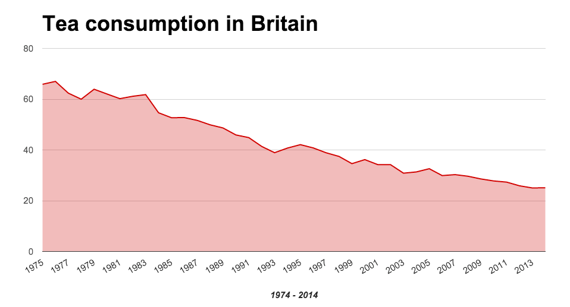

Family food survey data: How British diets have changed since 1974

The UK’s Department for Environment, Food and Rural Affairs (Defra) has a transformative open data programme. Defra has committed to publish 8,000 datasets as open data in 12 months and transform how it collects, collaborates with and uses data in everything it does.
This week, Defra has published almost three decades of family food survey data as open data, giving others an insight into the changing diets of British Households.
To mark the dataset’s release, the ODI has commissioned a data visualisation, to help inspire others to play with this new and interesting open data source.
In this blog, originally posted on Defra digital, Defra Statistician David Lee reflects on the journey towards publishing the data, and how he hopes it will be put to use.
By David Lee, Statistician, Defra
This week Defra has published a collection of datasets from the National Food Survey between 1974 – 2000, as open data.
This rich data collection comprises food diary records from approximately 150,000 households across the 70s, 80s and 90s, who were asked to keep seven-day diaries of the food and drink they brought into their homes. This data has historically been used to produce official government statistical estimates of average expenditure, purchases and derived nutrient intakes for the population of the country. Understanding the nation’s buying and eating habits has been a key piece of evidence to support government policy since World War 2, and continues to be so, albeit for very different reasons now than when it started.
The data you can now download as open data provides lots of information about how British families’ diets have changed over time. While we’ve had to remove some detail to make it safe for publication as open data, there are still lots of fascinating insights about the households who have participated: who kept hens, and who owned freezers or microwaves.
For me, as the head of the statistics team responsible for the survey we now call Family Food, it’s been a journey of discovery. I am conscious that I’m just the current custodian of a series which began in 1940.
Uniquely in the civil service, under the Statistics Code of Practice, statisticians have to publish our contact details on our statistical products, and we are acutely aware of our watchdogs in the ICO, the UKSA and elsewhere. Our names are on our data outputs and there are potentially severe consequences for us (and irreversible damage to public trust) if we break the rules on disclosure and confidentiality. However, our code also tells us to publish as much as we possibly can – we always want people to use and engage with our data. So going beyond statistics into open datasets has been an exciting step forward for the team.
Our challenge
Our task has been to successfully ensure that we maintain confidentiality while maximising the value of our data for users out there. We’ve done much more than just prepare this data for publication: the small cross-department project team working on this has established a robust internal procedure which will inform and support future Defra activities in this area. There have been missteps and delays along the way, but the path should be clearer for those who follow us.
We have published a privacy impact assessment which documents some of this process alongside the data release. We’ve also created a commentable version of our PIA for you to provide feedback on what else we might do in future.
The Secretary of State for Defra has set a challenge for the department – to become a more open, collaborative and data-driven organisation – and a benchmark for Whitehall. It’s exciting for a statistician to see data and evidence given such a high profile in this way. It presents an opportunity and a test for us, and for me personally it has been a great learning experience.
Defra holds lots of data that can and should be published openly – it helps us do our work, and might have value for other people too. There’s also the data that we simply have to keep closed, because it’s sensitive and needs to be kept secure. And in the middle, Defra has a lot of data that sits in a bit of a grey area – there’s a risk that if combined with other data, it might enable people to be identified, or it might contain bits of data provided by third-parties.
The Family Food Survey data falls into this grey area, and so we’ve introduced new processes and taken extra care to try to make available a version of the data we hold that is both safe and usable. Publishing anonymised data can feel scary, but we have expertise to draw upon and a well-established framework to define the safe limits we can work within. We can meet this challenge.
The future
For users out there, you get access to a version of the longest running continuous household survey of its kind in the world. The survey results are already published annually as statistical datasets, but access to the underlying diary data itself might open up new kinds of uses. We have already heard stories of possible applications that people are interested in: schoolchildren could keep their own food diaries and then compare them with actual historic survey data as part of science or design and technology lessons. Or local history groups could scour the datasets for interesting local data. Or something else totally out of the blue. The exciting thing is that we just cannot predict what users will do.
For a survey that started during World War 2, this is not the end. It is not even the beginning of the end. But it is, perhaps, the end of the beginning (sorry, Winston!). As I noted in my first post there are two other phases to go, and not even this stage is over for good. We have had to make judgement calls in treating this data for release, and so some information has been removed. The untreated data is still available under a more restrictive licence via the UK Data Service.
We at Defra want to hear what you are doing with the family food survey, and if there is more you want from it. So, please get in touch: email [email protected] or tweet @DefraStats and @DefraGovUK with hashtag #FamilyFoodStats.
The ODI offers support and funding to people and organisations doing interesting things with open data, with real-world positive impacts. Check out our ODI Showcase call for entries to find out more.